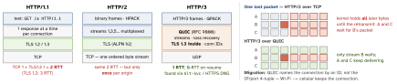
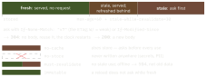

networking · folio
In one line: One set of semantics — methods, status, headers, written once for all versions in RFC 9110 — on three wire formats, each built because the queue moved down a layer: 1.1 queues requests on a connection, 2 multiplexes streams over one TCP pipe that a single lost packet stalls, 3 gives every stream its own pipe inside QUIC over UDP.
Download PDF Print view LaTeX source



1.1 — one answer at a time, so six connections
- Persistent by default (
Connection: closeends one). Pipelining sends ahead but answers in order — one slow response blocks the rest; proxies broke it, browsers ship it off. - So browsers open parallel connections: RFC 2616 said “SHOULD NOT maintain more than 2”; browsers settled on 6, RFC 9112 dropped the number as “impractical” — and sharding hosts for more now hurts h2.
2 — one connection, many streams
- Every frame carries a stream id, so requests interleave (flow control per stream and per connection); ids are never reused — a long-lived connection can run out.
RST_STREAMcancels one request, connection intact — the hook for Rapid Reset (2023): open, cancel at once, never over the stream limit, while the server still parses each — 398 M requests/s at Google, 7½× the record.- Why HPACK, not gzip: SPDY’s DEFLATE fell to CRIME, which read secrets from the compressed length. HPACK matches only whole fields — 61 static entries, a dynamic table (entry = name + value + 32 B), Huffman; a repeated cookie: 1–2 bytes.
- Push died: 1.25 % of h2 sites used it; Chrome 106 switched it off. Its heir
103 Early Hintsshipped in Chrome 103.
3 — the streams move into QUIC
- QUIC recovers loss per stream; QPACK replaces HPACK, which relies on in-order delivery — what QUIC gave up. TCP stays the fallback when UDP is blocked.
- Anti-amplification: the first client datagram is padded to ≥1200 bytes; until the address is proven, the server sends ≤3× what it got — spoofed UDP buys no amplifier.
- Against ossification: middleboxes block unknown TCP options, so QUIC encrypts all it can. Versions
0x?a?a?a?astay reserved to exercise negotiation, and QUIC v2 (2023) changes only keys, codepoints and its number:0x6b3343cf, not 2.
Fossils in the wire
- HTTP/2 opens with
PRI * HTTP/2.0…SM, chosen so 1.x servers stop there.FOO…BAin draft-03, thenSTA…RT; 14 June 2013, 8 days after PRISM broke, commit “Exercising editorial discretion regarding magic” made itPRI…SM. Refereris misspelled, frozen since RFC 1945;Referrer-Policyis not.
Example — which protocol did I get? (a task delegate)
func urlSession(_ s: URLSession, task: URLSessionTask,
didFinishCollecting m: URLSessionTaskMetrics) {
for t in m.transactionMetrics { // h2/h3 · keep-alive hit · .localCache?
print(t.networkProtocolName ?? "", t.isReusedConnection,
t.resourceFetchType) } }
req.assumesHTTP3Capable = true // race QUIC, no Alt-Svc first (iOS 14.5+)A stored response’s life

private bars shared caches — omit it per user and a CDN serves A’s data to B; s-maxage is their own clock. Vary adds request headers to the key; Vary: * never matches.
What URLSession does for you
- No code for h2 or h3 (once advertised); one pool per session. Sends
Accept-Encoding: gzip, deflate, brand decodes; never compresses request bodies.expectedContentLengthmay be -1. URLCacheskips any response over ∼5 % of the disk cache.WKWebViewkeeps its ownWKHTTPCookieStore, apart fromHTTPCookieStorage— sync them.
CORS — shaped by what an old HTML form could send
In a browser, a page may send cross-origin but read the reply only if the server opts in (Access-Control-Allow-Origin, never * with credentials). Why some skip the check: an HTML 4.0 form could always POST anywhere, so servers already resist CSRF — what a form can send (GET/HEAD/POST, form types) goes straight out; JSON, Authorization or PUT get an OPTIONS preflight first.
Cookies — Netscape’s idea, fenced in
Netscape’s first spec: 4 KB a cookie, 20 per domain, 300 in all; RFC 6265’s floor: 4096 B, 50, 3000. Each attribute fences one attack: Secure sniffing · HttpOnly injected JS (fetch still sends it) · SameSite CSRF (None needs Secure) · __Host- Secure, no Domain, Path=/. A Lax-by-default cookie under 2 minutes old still rides a cross-site POST.
Traps
- Setting
If-None-Matchyourself: now you get the raw 304 with an empty body — decode fails. - “CORS error in my iOS app” — not from URLSession (only JS in a
WKWebView); CORS guards users’ browsers, not your API. - Branching on the reason phrase (“Not Found”): h2 and h3 carry only the code, and RFC 9112 says ignore it anyway.
- Case-sensitive header lookups: names are case-insensitive; h2/h3 require lowercase, uppercase is malformed.
Further reading
- The Original HTTP as defined in 1991 — all of HTTP/0.9 on one screen: a one-line GET, no headers, no status codes
- The secret message hidden in every HTTP/2 connection — how PRI…SM got into the preface, with the draft history
- HTTP/2 push is tougher than I thought — browser-by-browser experiments that show why push never worked in practice
- How it works: the novel HTTP/2 “Rapid Reset” DDoS attack — why a cancelled stream costs the server far more than the client
- HTTP/3 explained: Ossification — why QUIC encrypts nearly everything and runs over UDP
- Netscape’s original cookie specification — where
Set-Cookie, its 4 KB limit and its dashedexpiresdate came from